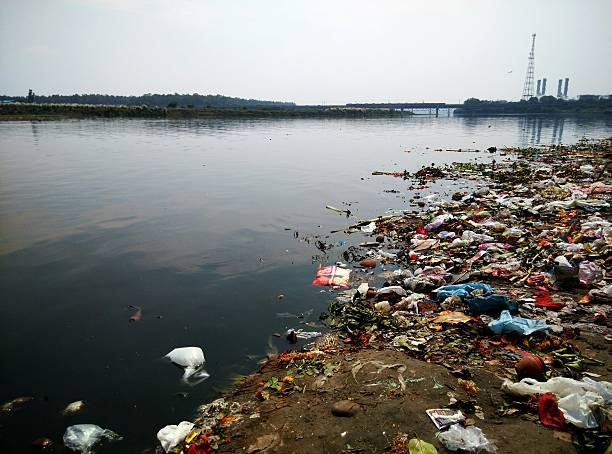

Water pollution occurs when harmful substances often chemicals or microorganisms contaminate a stream, river, lake, ocean, aquifer, or other body of water, degrading water quality and rendering it toxic to humans or the environment.

Water pollution is the contamination of water bodies, usually as a result of human activities. Water bodies include for example lakes, rivers, oceans, aquifers and groundwater. Water pollution results when contaminants are introduced into the natural environmen.
The addition of harmful chemicals to natural water. Sources of water pollution in the United States include industrial waste, run-off from fields treated with chemical fertilizers, and run-off from areas that have been mined.